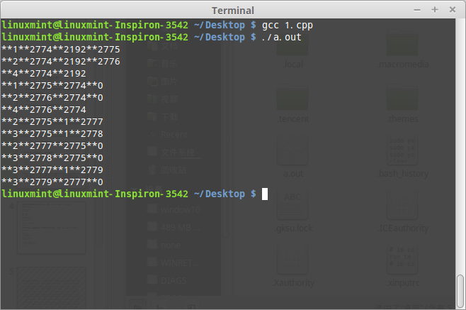
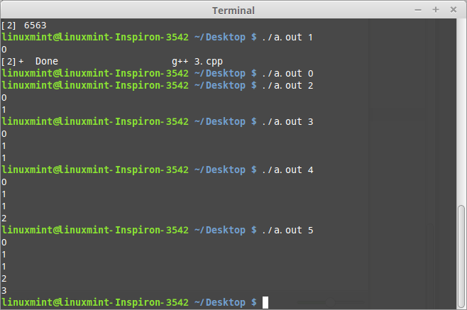

操作系统（Operating System）分配资源的基本单位是进程，而线程是指令执行额基本单位。一个进程可以包含多个子进程，亦可以包含多个线程。下面简单了解一下关于进程的创建以及进程间的共享内存。
进程创建
系统调用fork()在不同进程中会返回不同的值：在子进程中返回值为0；父进程中返回值为子进程的ID。所有进程都会执行fork()之后的指令，相应的父进程中的所有数据会复制到子进程中。看看例子：
1 2 3 4 5 6 7 8 9 10 11 12 13 14 15 16
| #include <stdio.h> #include <sys/types.h> #include <unistd.h> int main() { int pid1 = fork(); printf("**1**%d**%d**%d\n", getpid(), getppid(), pid1); int pid2 = fork(); printf("**2**%d**%d**%d\n", getpid(), getppid(), pid2); if (pid1 == 0) { int pid3 = fork(); printf("**3**%d**%d**%d\n", getpid(), getppid(), pid3); } else printf("**4**%d**%d\n", getpid(), getppid()); return 0; }
|

下面解释一下运行结果：
如上图所示，父进程ID2774，子进程有2775,2776, 2775的子进程有2777,2778,2777的子进程有2779。
首先，父进程执行所有代码，则输出**1**2774**2192**2775 **2**2774**2192**2776 **4**2774**2192，同时创建子进程2775,2776。
子进程2775执行第七行到最后的代码，子进程2776执行第九行到最后的代码，两个子进程同步执行，先后顺序不一定。2775输出**1**2775**2774**0，接着在第八行创建子进程2777，输出**2**2775**1**2777，2777执行第九行到最后的代码。到第九行，2776输出**2**2776**2774**0，到第10行，2775需要进入if语句，此时2776不需要创建子进程，执行较快，输出**4**2776**2774。2775进入if后，创建新进程2778，输出**3**2775**1**2778，2778执行第11行到最后的代码，到此，父进程2774的两个子进程2775,2776执行完毕。
接着2775的子进程2777,2778同步执行，由于pid1为0，两个都执行if语句，2778输出**3**2778**2775**0，2777进入if创建2779子进程，2779执行12行到最后的代码，所以会输出**2**2777**2775**0，创建2779后输出**3**2777**1**2779 **3**2779**2777**0。
共享内存
编写代码创建子进程，使用fork(), 产生的子程序生成对应的裴波那契数, 利用进程间共享内存的方法, 将每个子进程的数字添加到共享内存中, 最后, 在父进程中将数列输出。
思路
注意父进程与子进程的同步问题，链式创建子进程，而且每个父进程都必须wait()子进程完成才能继续执行，每个进程存有整型fib0, fib1, result,分别代表前两个裴波纳契数和当前的裴波那契数,每个进程将result存储到共享内存中。最后父进程输出时，输出完毕，父进程删除共享空间。
代码
1 2 3 4 5 6 7 8 9 10 11 12 13 14 15 16 17 18 19 20 21 22 23 24 25 26 27 28 29 30 31 32 33 34 35 36 37 38 39 40 41 42 43 44 45 46 47 48 49 50 51 52 53 54 55 56 57 58 59 60 61 62 63 64 65 66 67 68 69 70
| #include<stdlib.h> #include<iostream> #include<stdio.h> #include<string.h> #include<errno.h> #include<unistd.h> #include<sys/stat.h> #include<sys/types.h> #include<sys/ipc.h> #include<sys/shm.h> #include<sys/wait.h> using namespace std; #define PERM S_IRUSR|S_IWUSR #define MAX_SEQUENCE 10 typedef struct { long fib[MAX_SEQUENCE]; int size; } shared_data; int main(int argc, char* argv[]) { key_t shmid; pid_t pid; bool parent = true; int n; shared_data* block; if (argc != 2) { cout << "error: the number of argements must be 1" << endl; exit(1); } if ((shmid = shmget(IPC_PRIVATE, sizeof(shared_data), PERM)) == -1) { cout << "Create shared memory error" << endl; } sscanf(argv[1], "%d", &n); int fib0 = 0, fib1 = 1, result = 1; block = (shared_data*)shmat(shmid, 0, 0); block->size = 0; if (n > 0) block->fib[block->size++] = 0; if (n > 1) block->fib[block->size++] = 1; if (n > 2) { block->fib[block->size++] = 1; n -= 3; while (n > 0) { n--; pid = fork(); if (pid == 0) { parent = false; fib0 = fib1; fib1 = result; result = fib0 + fib1; block->fib[block->size++] = result; } else break; } } if (pid != 0) { wait(0); } if (parent) { for (int i = 0; i < block->size; i++) cout << block->fib[i] << endl; } shmdt(block); if (parent) shmctl(shmid, IPC_RMID, NULL); return 0; }
|
结果
